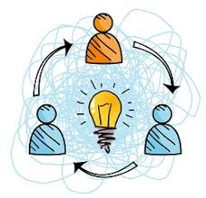

INNOVACION
es un proceso que busca mejorar o crear soluciones nuevas
y novedosas para generar un impacto positivo en un mercado
o en la sociedad, ya sea a través de productos,
servicios, procesos, métodos comerciales o incluso nuevas
formas de organización
